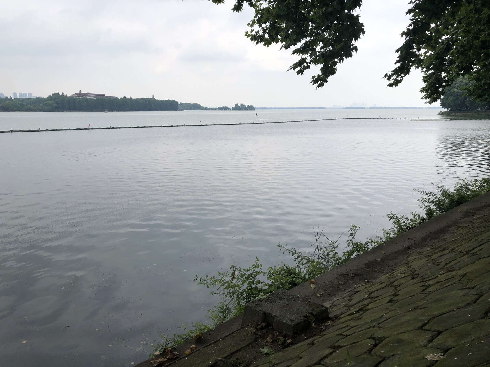
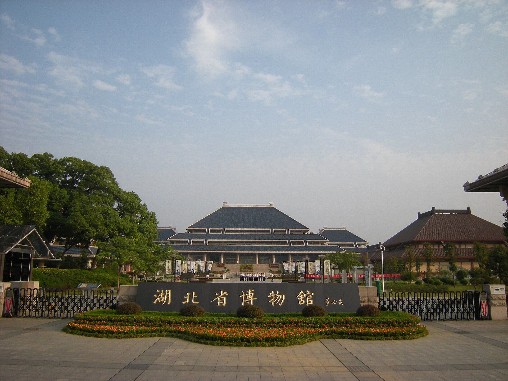
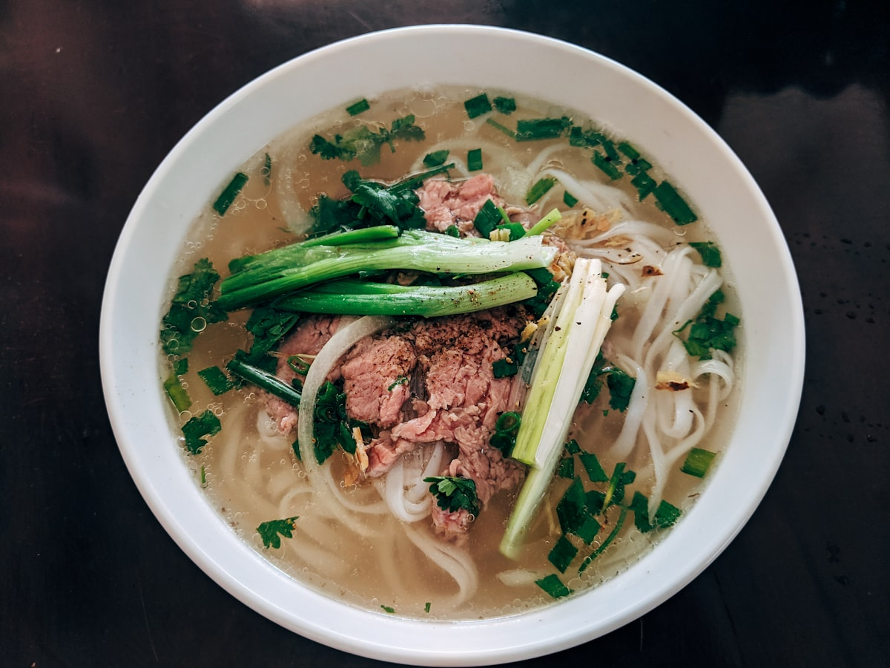
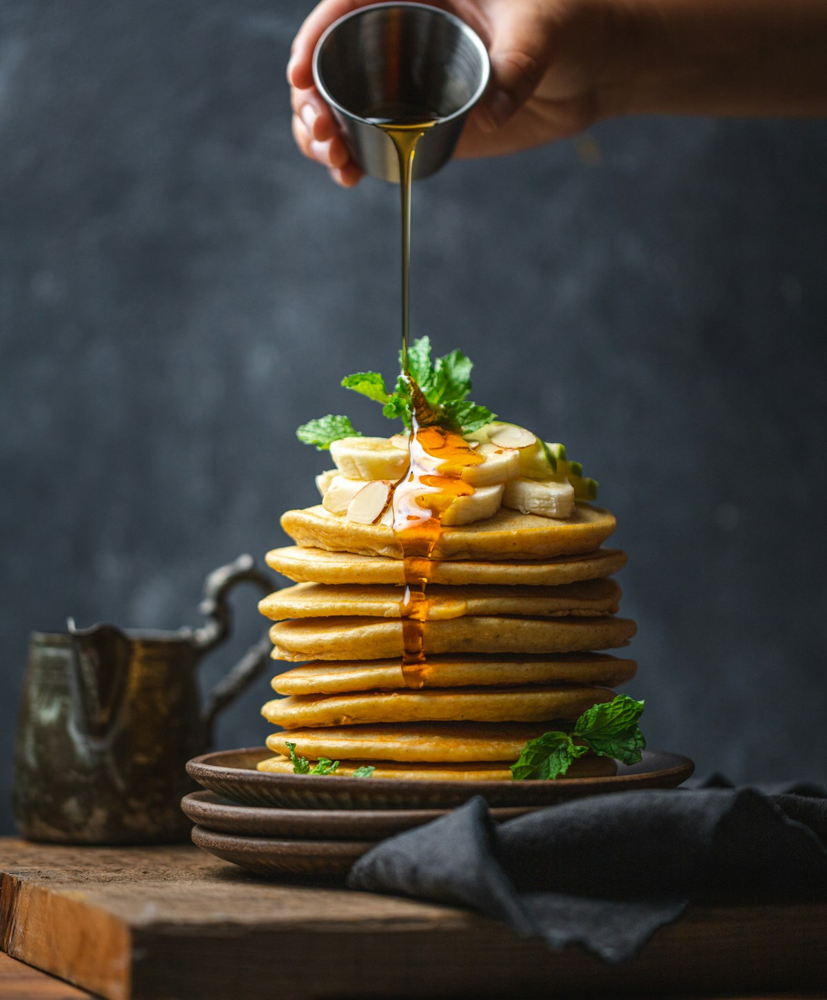

美食
武汉过早（热干面、三鲜豆皮、糊汤粉配面窝）+ 排骨藕汤；长沙臭豆腐、糖油粑粑、剁椒鱼头、口味虾、茶颜悦色。

双城 · 5 天 4 晚
淄博出发 · 两人 · 10.2—10.6 · 过早 + 湘菜 + 双省博国宝
亮点速览
武汉过早（热干面、三鲜豆皮、糊汤粉配面窝）+ 排骨藕汤；长沙臭豆腐、糖油粑粑、剁椒鱼头、口味虾、茶颜悦色。

东湖绿道骑行、橘子洲湘江风光、岳麓山秋色初显。

湖北省博（曾侯乙编钟、越王勾践剑）、湖南博物院（马王堆、辛追夫人）、岳麓书院。
大交通
行程速览
| 日期 | 上午 | 下午 | 晚上 |
|---|---|---|---|
| D1 10.2 | 高铁途中 | 抵武汉入住 | 江汉路+汉口江滩 |
| D2 10.3 | 湖北省博物馆 | 东湖绿道 | 粮道街/万松园 |
| D3 10.4 | 高铁赴长沙 | 橘子洲 | 坡子街/太平街 |
| D4 10.5 | 湖南博物院或岳麓山 | 互换 | 南门口/冬瓜山 |
| D5 10.6 | 嗦粉、伴手礼 | 返程 | 抵淄博 |
每日详细安排
约 15 点抵武汉站，地铁进市区（江汉路一带约 40 分钟）。逛江汉路步行街，步行至汉口江滩看长江灯光。晚餐就近：热干面、糊汤粉配面窝。今日不排重体力。
睡到自然醒，嗦一碗长沙米粉，买伴手礼（臭豆腐生胚、酱板鸭、茶颜茶包），中午前退房赴长沙南站返程。
住宿
美食清单


武汉：热干面（街头老店更香）、三鲜豆皮、糊汤粉配面窝、排骨藕汤、油饼包烧麦。过早往居民区老巷子钻。
长沙：臭豆腐、糖油粑粑、剁椒鱼头、口味虾、辣椒炒肉、长沙米粉、茶颜悦色。坡子街打卡，南门口/冬瓜山吃饱。
十一特别提示
弹性备选